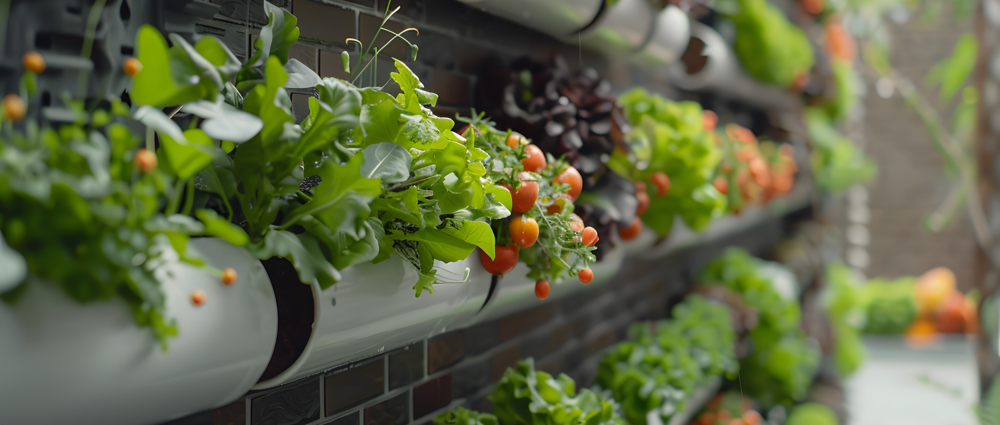

HIDROPONIA: CULTIVO SUSTENTÁVEL SEM SOLO
A hidroponia é uma técnica de cultivo de plantas que dispensa o uso de solo, utilizando apenas água e nutrientes essenciais dissolvidos nela. Em sistemas hidropônicos, as raízes das plantas são submersas em uma solução nutritiva cuidadosamente balanceada, que fornece todos os minerais e nutrientes necessários para o seu desenvolvimento. Essa técnica permite um maior controle sobre o crescimento das plantas, reduzindo o consumo de água e espaço em comparação ao cultivo tradicional, sendo uma opção sustentável e eficiente para produção agrícola em áreas urbanas ou com solo de baixa qualidade.